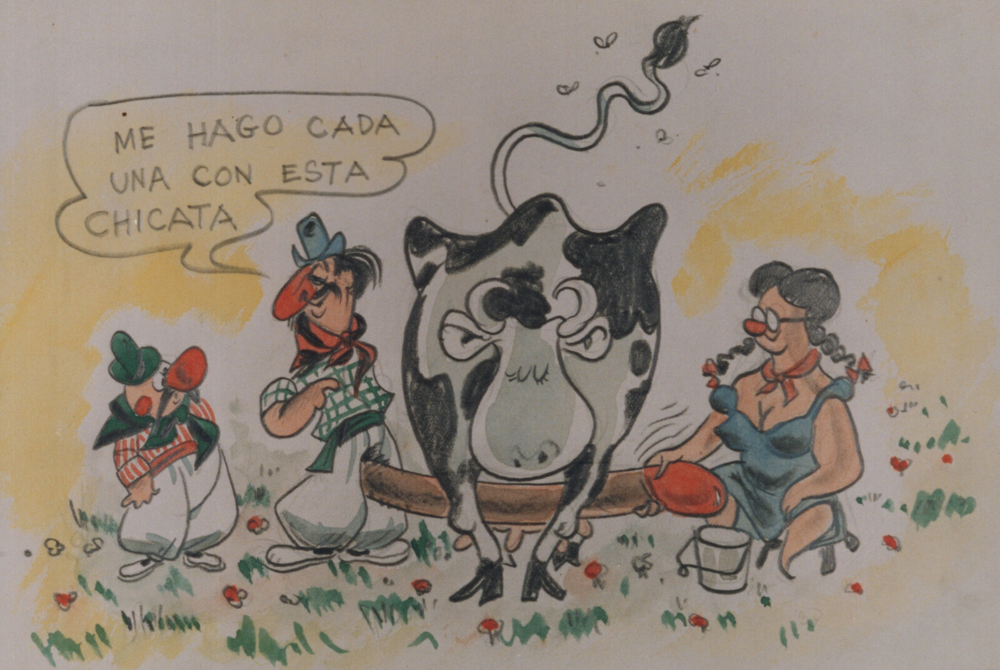
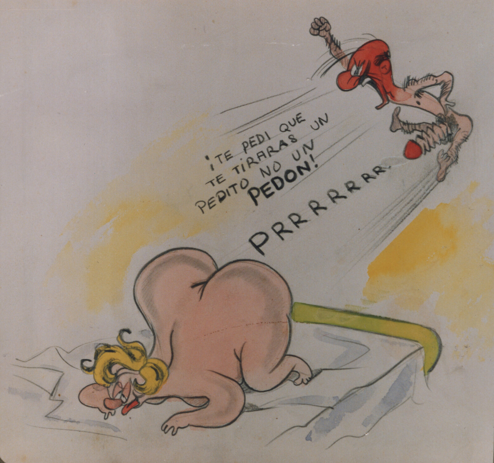
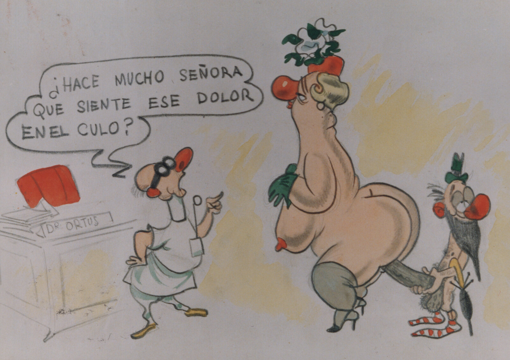

El Otro Yo del Sr. Divito
Por Guillermo Divito
Edición a cargo y prólogo Eduardo Orenstein
21 × 25,5 cm · Tapa blanda con solapas · 110 pp.
Guillermo Divito (1914-1969) fue mucho más que un gran dibujante. Desde las páginas de "Rico Tipo" hizo desfilar una legión de personajes arquetípicos de la fauna porteña, sobresaliendo sus famosas "Chicas". Una dicotomía que debe haber sufrido el propio Divito, amante de mujeres reales y de las "chicas" a las que rindió tributo, pero con las que nunca pudo concretar más allá del chiste pícaro. Una continencia imposible de soportar que lo llevó, irremediablemente y en secreto, a realizar este álbum personal. Todos tenemos un Otro Yo que en algún momento se nos escapa.
Comprar